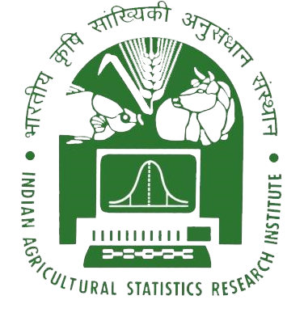
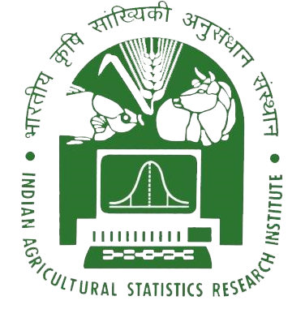

Ricebean, Vigna umbellata is a kharif-season annual legume. Its seeds are consumed as pulse. It is considered as a minor legume as it is grown in limited areas as intercrop with maize and sorghum. It is mostly grown in Northern part of India (Mainly Uttarakhand) and North-eastern part of India (Mainly Assam). Seed yield of Ricebean in India varies from 200-300kg/ha. Ricebean seed contains 17.26 to 21.42% protein, 3.46 to 4.03% fat, 61.09 to 64.73% carbohydrates 3.99 to 4.58% ash and 5.22 to 7.43% fiber (dry weight basis)(Rodriguez et al.,1991). It is a rich source of protein and minerals, and is resistant to various pests and diseases. It is adaptive to a diverse range of environment and can grow in resource- poor soil. Long non-coding RNAs (lncRNAs) are a large and diverse class of transcribed RNA molecules with a nucleotide length of more than 200 bp and ORF<100 bp that do not encode proteins. It is one of the type of Regulatory non coding RNA. LncRNAs are important regulators of gene expression by DNA methylation and chromatin remodeling, and in some cases, they act as miRNA (Micro RNA) sponges to enhance the expression of mRNA targeted by miRNA (Tay et al., 2014). LncRNAs are thought to have a wide range of functions in cellular and developmental processes. LncRNA may be positioned beside protein-coding gene or in between genes even it overlaps with coding genes.